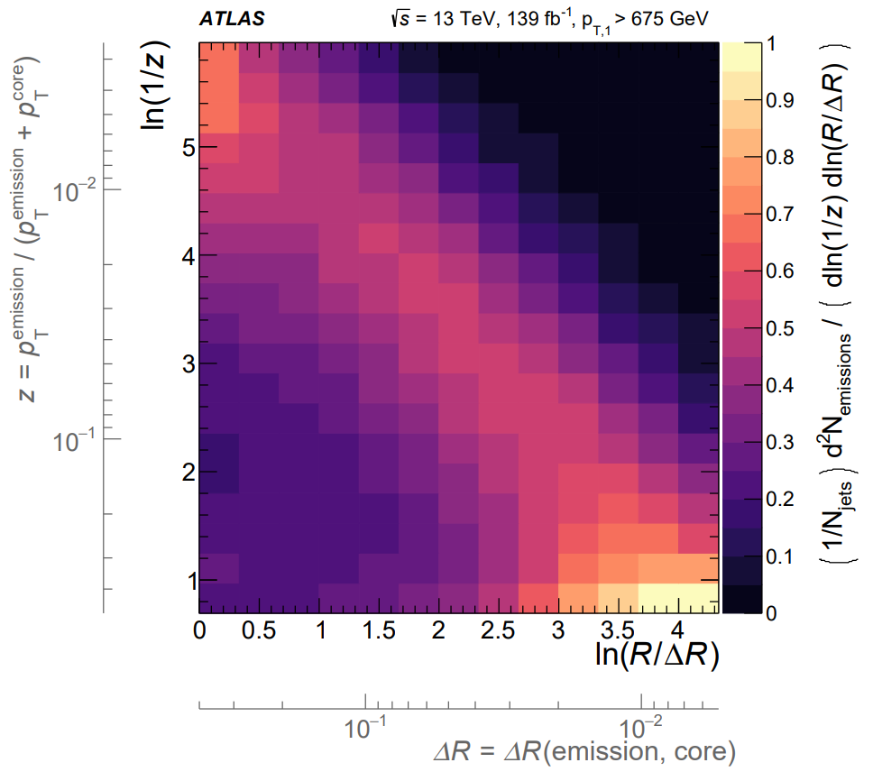

How a jet gets its shape
Jets are sprays of particles emerging from high-energy particle collisions. They are ubiquitous at the LHC. But why do they exist and how do they form?
Protons are full of quarks and gluons. Naturally, their collisions give rise to many energetic quarks and gluons. We never see these in the detector, though. Instead, they undergo a multi-stage process to form jets of particles that we do observe.
Patterns in these sprays of particles allow us to better hunt for new physics or explore the strong nuclear force. These patterns are known as jet “substructure”. Here, I want to highlight the fractal nature of the patterns in jet formation.
See my recent post to see real jets in data using CMS Open Data.
Here’s a cartoon of the jet formation process that I made to give you the idea.
Let’s unpack this.
Collision: Protons collide. Often, an energetic quark (plus other stuff) comes out.
Fragmentation: The quark “fragments” into a fractal of quarks and gluons.
Hadronization: The quarks and gluons “hadronize” into the observed particles.
This jet has “two-pronged” substructure: its energy is mostly found in two clusters. This traces back to an energetic gluon emission during fragmentation.
I want to focus on the fragmentation stage, as it gives rise to jet substructure. Fragmentation is a fractal, self-similar process governed by the strong nuclear force: the quark emits gluons, which emit gluons, which emit gluons, and so on. The outcome is the fractal shower of quarks and gluons (“partons”) that you see.
The cascade of emissions is known as the “parton shower”.
Jet fragmentation
Emitting Gluons
What’s the probability for a gluon to emit another gluon with energy $E$ at angle $\theta$? Zooming into the cartoon, this looks like: We can go through the calculation via Feynman diagrams, but there’s a shortcut.
At high energies, the strong force is (approximately) scale invariant. The answer must be the same at all scales, invariant under scalings $E\to\lambda E$ or $\theta\to\lambda\theta$. The simplest thing you could write down is: $$P(E,\theta) = \frac{2\alpha_s C_g}{\pi} \frac{1}{E\theta}$$ where $\alpha_s$ is the strong coupling constant and $C_g=3$ is the gluon color factor. (For quarks, the color factor is $C_F = 4 / 3$.) This diverges when the emitted gluon is soft ($E\to 0$) or collinear ($\theta\to 0$) to the original gluon!
There is a very nice and detailed discussion of the strong force from this perspective by Andrew Larkoski. He takes this logic quite far, going as far as calculating substructure observables such as jet mass.
The punchline: gluons are uniformly emitted in $(\ln E, \ln \theta)$, the “Lund plane”. This enhances soft and collinear emissions, creating jets and their substructure. There are myriad corrections to this picture, but this is the core idea.
Generating jets
Let’s now implement a model of fragmentation that you can take home with you, using the ideas that underpin the parton shower.
You’ll notice that the “probability” $P(E,\theta)$ above diverges. The leading emission can’t be uniformly distributed in the Lund plane – the party has to end somewhere. A more careful treatment yields that the probability to emit a gluon with energy $E$ at angle $\theta$ is more like: $$P(E,\theta) = \frac{2\alpha_s C_g}{\pi} \frac{1}{E\theta} e^{-\frac{\alpha_s C_g}{\pi} \ln^2 E\theta}$$ which is a true probability distribution.
Plotting this result for quark jets, with $\alpha_s = 0.1$ and $C_q = \frac{4}{3}$, gives us the following visualization of the Lund plane.
You can also turn this around and iteratively sample from $p(E,\theta)$ to make your own toy parton shower!
Going Further
How well does our discussion stand up to actual scrutiny? Fully understanding fragmentation is much more complicated than this simple picture.
The scale invariance of the strong force is only approximate. The strong coupling constant “runs”, taking different values at different energy scales. Emissions in the Lund plane aren’t precisely uniform and differ between quarks and gluons. Hadronization kicks in and cuts off fragmentation at scales around 1 GeV.
Nonetheless, the essential lessons we’ve learned persist.
The ATLAS collaboration just recently looked inside jets and measured the Lund Plane emission profile in its full glory. Can you make sense of what you see?  The result is both scientifically and visually beautiful!